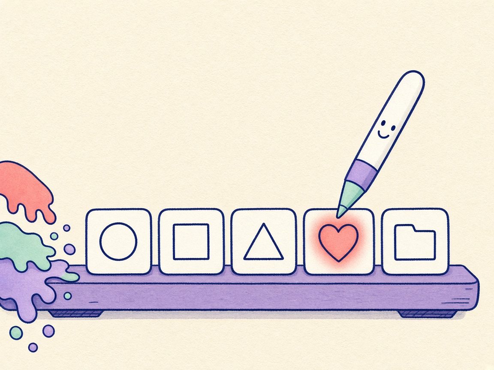

01 / Linie

Deutsch
Ruhige Striche
Schau, ich leuchte.
Bekannte Apps werden weiße Strichsymbole. Eine ohne Symbol behält ihr Icon. Zeigen und die Tastatur lassen es farbig leuchten.
English
Calm lines
Watch me glow.
Known apps become white line glyphs. One without a glyph keeps its icon. Hover and the keyboard make it glow.